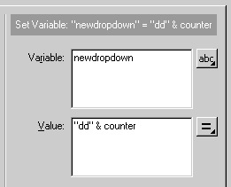
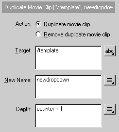
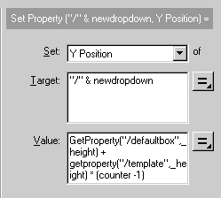
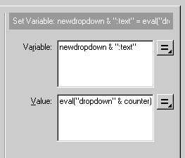

Reusable UI elements in Flash 4 for Director/ShockwaveBy Jim Hayes |
|
|
Flash 4 now includes its own scripting language, called actionScript. Among other things, actionScript allows you to duplicate an existing movie clip within your Flash sprite, and set its size, position and variables (including text fields). What I hope to cover in this article is the use of this feature to build a set of reusable Flash sprites for dropdown list, radio and check button controls. These controls will configure their appearance internally, such as the number and the labels of the chooseable options, depending on parameters sent to them by a simple lingo behaviour. They have the advantage of needing no Xtras (Shockwave compatible IOW), being small in file size and cross-platform. I'll use the drop down list as the example for this article, but the source code for radio and checkbox controls (which work along much the same lines) are included in the downloadable file. Please be aware that you need to be using Director 7.02 and the latest version of the FlashAsset xtra for this example to work -- that's the one that shipped with shockwave 7.02. If you have not already done so, find this file on Windows 9x on the Macintosh on Windows NT and use it to replace the previous version in your authoring environment Xtras folder. Implementation OverviewHere is a sample Flash movie which gives a quick idea of the basic components of the Flash sprite (using fixed number/values of the drop down option variables.)
I'm going to assume a basic knowledge of Flash from the reader at this point, including how to create button and movie clip symbols, how to name an instance of a movie clip and a basic understanding of the targeting syntax for Flash layers and movies. In addition to Eric Coker's article on Flash 4 text within Director/Shockwave movies I'd suggest you check out http://www.flashlite.net/ and Macromedia's Flash technotes. Please also see the movie Duplicate Movie Clip.fla that ships with Flash 4 (in the samples folder), and Flash helpfile Emulating Arrays. This article is largely derived from these 2 examples! The basic components needed to get our control to work are as follows:
There are two essential frames in the Flash movie sprite. The first frame builds the dropdown menu within the sprite by duplicating the appropriate number of options from the template movie, setting their position and their text field variable according to the number and values of the variables set by the sprite's behaviour. I call this frame Dropdown. The second frame removes these duplicates, leaving the sprite displaying its "rolled up" state. I call this frame removeDropdown. The button contained in our template movie clip needs to perform the following actions when clicked on (These are copied to any duplicates). It must change the default display (i.e. that of the "template" movie clip) to that of its own text variable/display. It must also raise an event in the sprite's behaviour to tell it has done so. Lastly, it must send the sprite to its removeDropdown frame. While the above are the very basics, I also use two additional visual elements.
Code : Lingo behaviour In this case, I use the lines of a text cast member to populate a temporary linear list dropDownOptionList that is then fed as a parameter into the handler (setFlashvariables) that sets the drop down options in the Flash sprite. You could use whatever means you desire to populute this list, and also reset the sprites display by use of the command... sendsprite whichSprite,#setFlashvariables,[your_linear_list_of_strings],"Default_display_string" Here's the behaviour ... property pMySprite,pDefault,pText,pCollapseOnmouseLeave
on beginSprite me
pMySprite = sprite(the spritenum of me)
dropDownOptionList = MakeListFromTextMember (me)
setFlashVariables me, dropDownOptionList, pDefault
end beginSprite
on setFlashVariables me, optionList, strDefault
pMySprite.setVariable("default",strDefault)
temp = optionList.count
repeat with i = 1 to temp
pMySprite.setVariable(("dropdown" & i)," " & optionList[i])
end repeat
pMySprite.setVariable("no_of_dropdowns",string(temp))
pMySprite.gotoframe(1)
play pMySprite
end setFlashVariables
on returndata me
put pMySprite.getVariable("default")
end returndata
on mouseLeave me
if pCollapseOnmouseLeave then
pMySprite.gotoframe("cleardropdown")
end if
end mouseLeave
on makeListFromTextMember me
listToReturn = [ ]
temp = pText.text.lines.count
repeat with i = 1 to temp
listToReturn.add(pText.text.line[i])
end repeat
return listToReturn
end
on getPropertyDescriptionList me
pdl = [:]
addprop pdl, #pDefault,[comment:"enter default string ¬
for drop down menu",#format:#string,#default:Void]
addprop pdl, #pText,[comment:"chose text member to ¬
populate drop down",#format:#text,#default:Void]
addprop pdl, #pCollapseOnmouseLeave,[comment:"menu ¬
collapses on mouseLeave?",#format:#boolean,#default:1]
return pdl
end
The handler to pay attention to at this stage is setFlashVariables me, optionList, strDefault. It sets a variable in the Flash sprite called default to the string specified by the parameter strDefault. This is the variable that the sprite will use to set its initial default display text field, and is also the one that I later refer to in order to extract the Flash sprite's value. (Bear with me till later on that one, please !). The handler then proceeds to step through the values of the linear list fed to it as the parameter "optionList", setting a series of Flash variables to the value of each member of that list. It is important to notice that these variable names are of the form dropdown1, dropdown2, dropdown3, dropdown4, etc. I use their sequentially numbered nature within the Flash file to enable it to evaluate their values within a "loop while" action. We set the Flash sprite variable no_of_dropdowns to the number of the Flash variables that we just set for the dropdown options. Although it's possible to count the number of variables set within the Flash sprite, it's far easier to set this variable via lingo. Lastly, we send the sprite to its first frame and send it a play command. While this is not necessary on initialisation, should you wish to reset the sprite with a sendsprite command then this will ensure that its properties and display are refreshed. I found it necessary to set Flash variables as strings; using integers raised errors. Please notice that I don't include much conversion of parameters to strings or related error checking in this example, since I specifically use strings as parameters. Your mileage may vary if you allow the sending of other data types to the control. At this point, I think it's worth noting that you can set whatever variable names and values you may desire within a Flash 4 sprite. If they don't already exist then they will be created on the fly. The other important handler is returnData. This handler is called from the Flash sprite (more on this later), but of course can also be called at any time by use of the sendsprite command. It gets the value of the Flash sprites "default" variable, in this case displaying it within the message window with a simple "put" command. I'll leave it to the reader to implement a more valuable use for the result according to his/her specific needs. The mouseLeave handler deals with collapse of the dropdown menu when the mouse leaves the sprite. This depends for its success on the fact that I have set the ink of the Flash sprite to be background transparent. When set thus, the mouseLeave event occurs whenever the cursor leaves visible areas of the Flash sprite. With the sprite's background set to transparent, the handler reacts only to the dynamically configured or pre-set visible elements of the sprite, and not to its entirety. It sends the sprite to its "removedropdown" frame, restoring the default "rolled up" display. Code : Flash Sprite actionScriptHaving set the initial Flash variables, it's now time to turn our attention to the Flash sprite itself, and the actionScript code that allows the sprite to configure itself. The first thing to do is to set the default display of the sprite. Here's the actionScript for frame 2 of the sprite.... (In my limited experience, I've found that use of frame 1 to set initial parameters can lead to some rather odd effects). I let the sprite initialise itself on frame 1 and play on to frame 2) Set Variable: "template:text" = default Stop So what that does is set the variable called "text" (a settable text field) in the movie clip instance called "template" (this our default display/template as defined above) to the value of the variable "default". Remember that our behaviour set the value of "default" to a string when this sprite was initialised. It then stops the sprite, at this point in its life it has done all it needs to; it loaded and displayed the default value. A mouse up event on the initial instance of the "drop down" button sends the sprite to the frame where it builds the drop down display (in this case the frame called "dropdown".) On (Release)
Go to and Stop ("dropdown")
End On
(Conversely, if the spite is at its dropdown frame, the button instance on that frame sends the Flash sprite to its "removedropdown" frame.) Here's what happens when the F4 sprite enters the frame called dropdown... Set Variable: "counter" = 1
Loop While (counter <= no_of_dropdowns)
Set Variable: "newdropdown" = "dd" & counter
Duplicate Movie Clip ("/template", newdropdown, counter + 1)
Set Property ("/" & newdropdown, Y Position) = GetProperty¬
("/defaultbox",_height) + getproperty("/template",_height) ¬
* (counter -1)
Set Variable: newdropdown & ":text" = eval("dropdown" & counter)
Set Variable: "counter" = counter + 1
End Loop
Comment: space
Duplicate Movie Clip ("/dropdownsurround", ¬
"dropdownbackground", 1)
Set Property ("/dropdownbackground", Y Position) = ¬
getproperty("/defaultbox",_height) + 0.5
Set Variable: "current_height" = getproperty("/dropdownbackground"¬
,_height)
Set Variable: "desired_height" = getproperty("/template",_height) ¬
* (no_of_dropdowns) + 0.5
Set Variable: "percentage_scale" = 100 * ¬
(desired_height/current_height)
Set Property ("/dropdownbackground", Y Scale) = ¬
percentage_scale
Stop
This is where we duplicate/position the appropriate number of movie clips from the template movie, according to the variable no_of_dropdowns that we set in the behaviour. First, we set a counter variable for our loop, named (rather unimaginatively) counter. Next we enter a loop, which will continue until the counter variable has reached the value of no_of_dropdowns. In each iteration of this loop, we create/set a variable "newdropdown" which we will use to name and refer to the duplicate of the template movie clip we are about to create. Note that this needs to have a unique value for each duplicate name, so we use the value of counter concatonated with a short string "dd"  Now we duplicate our default movie clip/button (remember that its instance name is template).  So, "/template" is the movie clip that we wish to duplicate. The "/" tells Flash that the movie clip is a child of the current movie. We use the variable that we just generated (of value dd1, dd2, dd3, dd4 etc) as the name for the instance of the new duplicate. The depth parameter is important. If you do not use a unique value for each duplicate, then all you will do is replace your previous duplicate with the current one. So we use a value linearly related to the variable counter, in this case counter + 1. There is a reason for this, in that the higher depth parameters take the foreground of the Flash sprite, and I wish to use a lower numbered depth as space for the dropdown options' background rectangle. Leaving Depth 1 free lets us do just that. Setting the vertical position of the new duplicate is pretty easy. Just work out how many duplicates you have already made (the counter value - 1), and set the Y position of your duplicate to (that number times the height of each duplicate) + the height of the default bounding box (instance name defaultbox). You'll notice that I've made some shortcuts here. Since the list drops down, I don't need to worry about horizontal positioning. Also, I've put the registation point of each movie clip at it's bottom edge. This considerably simplifies the code required to set their position. I've made the assumption that the top edge of the default bounding box is at Y = 0.  Next we need to set the text that will display in the our dropdown option. You evaluate the value of the variable we set initially via lingo, and pass it into the ":text" variable of our new duplicate. Evaluation is done using the syntax... Eval (expression_evaluating _to_a_variable_ name) ...which returns the value of that variable name. Since we know the naming convention we used to set our Flash variables, it's easy to reconstruct our variable names as we loop through (dropdown1, dropdown2, dropdown3, etc). To pass the value into a variable within a specific named instance of a movie clip we use the syntax... movie_instance_name:variable_name In this case the variable newdropdown concatenated with ":text"  Of course we also need to increment the "counter" in readiness for the next loop. Set Variable: "counter" = counter + 1 Having made and positioned all our dropdowns and exited the loop, we set about duplicating the template rectangle movie to use as their frame/background. This proved to be one of the more troublesome parts of my drop down menu. The problem that I encountered was that of scaling. The line thickness of its border appears to scale with the height/width property of the instance of the movie, such that taking a physically small instance and scaling its height up leads to its line thickness increasing to an unacceptably high level. I took the workaround option of setting its original size to about 1/2 the height of the Flash sprite and setting its position to be well offstage, so it will be invisible within Director/Shockwave. It is also possible to set the visible property of a template movie to false; any duplicate of it will default to being visible. If you care to look into the Flash source files for my radio button/checkbox examples, you'll see that I have made use of this rather handy facility in those files.... The actionScript is largely similar to what we've just done, with the exception that we need to set the height of the new duplicate. Unfortunately, you can't directly set an absolute value for the height property, you have to set a percentage scale of the current height. This requires a little bit of calculation. I've done the code in fairly "longhand" style which is hopefully clear. Why the little additions of 0.5 pixels here and there? One of the peculiarities of the heightand width properties of Flash movie clips (as measured by actionScript) is that bounding lines are measured up to the middle of the lines' thickness, such that half the thickness of the line is in fact displayed outside the measured Rect of the movie clip. Since I'm using 1 pixel lines as a bounding rectangle I throw in the two 0.5 pixel adjustments (2 pixel lines would require 1 pixel adjustments, etc). A workaround might be to use rectangle fills rather than lines. One of those things I wish I'd known beforehand. Remember that when we made the "option" duplicates we left "Depth 1" free for this duplicate of the dropdown background template? We use this lower depth now, and it's due to another scaling issue. Resizing the sprite in Director can cause thin bands of transparency to appear between the drop down options. Using a filled rectangle as a background hides this effect. A simple stop command at the end keeps the Flash sprite at its current frame. Et Voila, we have built our drop down menu! Fortunately, getting rid of the dropdown menu is far simpler. An action attached to the button in our "template" movie sends the sprite to the frame cleardropdown, where we quite simply remove all the duplicate movie clips we made on the dropdown frame. Since we know their name and number, it's a simple matter to step through each instance and remove it, lastly removing the dropdown surround movie. Set Variable: "counter" = 1
Loop While (counter <= no_of_dropdowns)
Remove Movie Clip ("dd" & counter)
Set Variable: "counter" = counter + 1
End Loop
Remove Movie Clip ("dropdownbackground")
The only really important part of our Flash sprite left to look at is what happens when we click on one of our dropdown options. Here's the actionScript actions attached the button in our template movie (this is replicated in all of our duplicates)..... On (Release)
Set Variable: "../template:text" = text
Set Variable: "../:default" = text
Begin Tell Target ("../")
Go to and Stop ("cleardropdown")
End Tell Target
Get URL ("event:returndata")
End On
The first action sets the text display of our template movie to the text of the option that was clicked on. The syntax "../" refers to the parent movie of this movie duplicate. Likewise, our actionScript next sets the variable default in the parent movie. This is the variable that we refer to get the return value of the splash sprite back into director. The next step is to clear the display of dropdown menu by telling (the parent of this movie) to go to the frame cleardropdown. Lastly, we raise a Lingo event (returndata) in the behaviour attached to the sprite, which (if you check the behaviour) you will see questions the sprite for the value of its default variable using "getvariable". That's how I handle the return of data to the behaviour, but I must confess that I am not entirely happy about the way I do it. I used the Flash default variable since it was already there, and doing this also resets the display. In other cases, an alternative would be to use the actionScript syntax "Get URL (Flash_variable)" and catch it with the lingo handler. on getURL me, stringFromFlash -- do something with stringFromFlash end That pretty well ends the code. Here's an example of the 3 Flash sprites in action within a shockwave movie....
A sample movie is available for downlaod in Mac or PC format. This is a Director 7 movie You can customise the appearance of these controls by altering their template movies in Flash, and maybe improve on the boring design I've outlined here. Have a litle play.. CaveatsIncluding font outlines in the Flash sprite makes it look nice, is antialiased and is reliable, but seems to have a 21 KB file size hit. There may be inconsistencies with varying machines/fonts and the size of the dropdown button movies, if a font is not included. You will notice that there is a limit to the number of dropdowns that can be displayed. This is due to the vertical size of the original Flash movie, and can be overcome by simply increasing its depth. It would be possible to add a "scroll bar" to scroll through a longer list of options, but I'm going to leave that one until I have a pressing need to do so, or some kind person posts the code. Likewise, there is a limit to the length of the strings that can be displayed due to the width of the movie, the solution being to make everything a bit wider!
As with all examples on DOUG, you are free to use any of these examples in your projects (commercial or otherwise), but please do email me to tell me so and preferably include my name and email in your credits. Hope that's useful. |